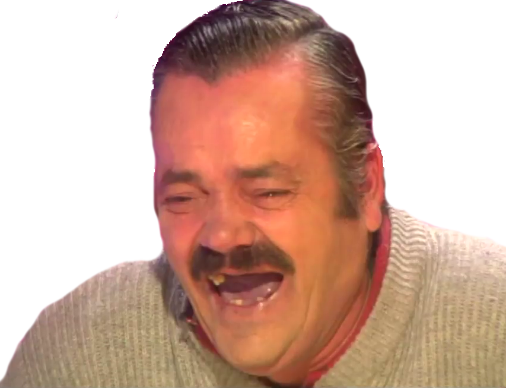

Инфа для затравочки
 Мемом является любая идея, символ, манера или образ действия, осознанно или неосознанно передаваемые от человека к человеку посредством речи, письма, видео, ритуалов, жестов и т. д. Термин «мем» и его понимание были введены эволюционным биологом Ричардом Докинзом в 1976 году в книге «Эгоистичный ген». Докинз предложил идею о том, что вся значимая для культуры информация состоит из базовых единиц — мемов, точно так же как биологическая информация состоит из генов; и так же как гены, мемы подвержены естественному отбору, мутации и искусственной селекции. На основе этой идеи Докинза возникла дисциплина меметика, в настоящее время имеющая спорный научный статус.
Однако интернет мемы это немного ругая вещица.